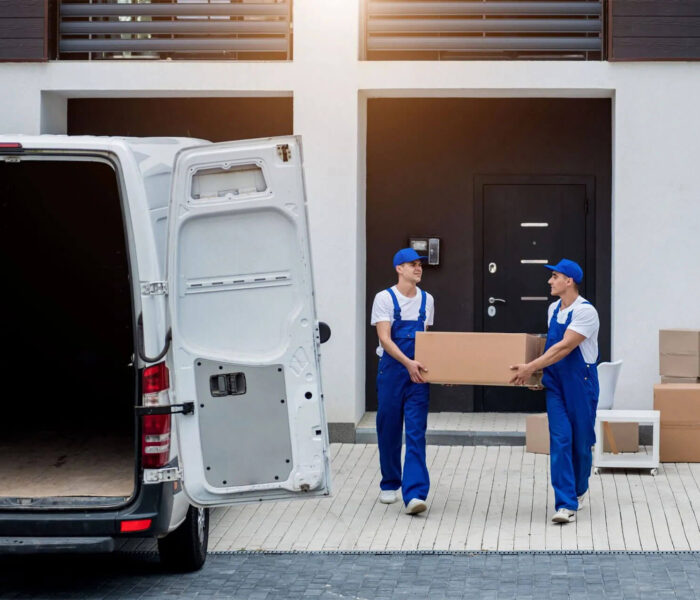

We are always on time.

About Us
Moving Cheese Removal History
The brand "Moving Cheese Removal Ltd" was inspired by the allegorical tale in the book "who moved my cheese' by Dr Spencer Johnson that tells a story of change in the workplace and the ability to adapt quickly and welcome change. The primary objective of our business endeavor is to provide a trustworthy and unique moving service in the UK—one that exceeds your expectations. We have handpicked the best drivers for our moving vehicles and the best removalist specialists for making your moving experience absolutely smooth and stress-free.
Our Values
What We Represent
Moving Cheese Removal Ltd as a company represent change.
As a moving company we help people move their possessions from one place to another, which
involves letting go of attachment to old residence etc. Overcoming fear and the "what if's" , taking
action and embracing change in anticipation of new things to come without clinging to past things.
The brand having been inspired by the book "who moved my cheese" by Doc Spencer Johnson is similar to the brand's theme in many ways and just like there is a process
involved in the book ,when the book characters had to search for a new cheese, there is also a
process involved in moving properties too (packing, loading, transporting and offloading) and there is
also planning(people have to book and plan in advance with us) same as depicted in the book too(the
book characters have to plan for a new cheese).
-
-
Your belongings are secure.
-
You can depend on us.
Choose Us
Why we?
-
Residential and commercial removals.
-
We use state of the art vehicles of various sizes, kept in impeccable conditions available whenever they are needed.
-
We are available all 7 days a week.
-
We pride ourselves on the quality of service that we provide with the help of high-quality removal vehicles that are kept at the pick of the condition at any given point in time.
-
Friendly and professional staff to help you.
-
Local property moves, helping you transfer your items between UK houses.
